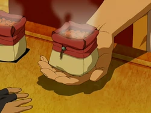

Fire Flakes

A very simple mix of spices and tomato rice recipe
Flaming Fire Flakes are a common snack in Fire Nation territories. Consisting of flakes covered with special spices and roasted at extremely high temperatures, fire flakes are infamous for being hot, though this may vary depending on the cook.
Ingredients
- 2 tablespoons vegetable oil
- 1 onion, chopped
- 1 teaspoon minced garlic
- 1 teaspoon chili powder
- 1 tablespoon ground cumin
- 1 cup uncooked short-grain white rice
- 1¾ cups chicken broth
- ¼ cup tomato paste
Instructions
- Preheat the oven to 350 degrees F (175 degrees C).
- Heat the oil in a large skillet over medium heat. Add the onion and garlic; cook and stir until onion is translucent. Stir in the chili powder and cumin, and cook for about 30 seconds. Add the rice, chicken broth and tomato paste, and bring to a boil. Transfer to a 1 quart casserole dish, and cover with aluminum foil or a lid.
- Bake for 35 to 40 minutes, or until liquid has been absorbed and rice is tender. Let rest for 3 to 5 minutes before serving.
Home